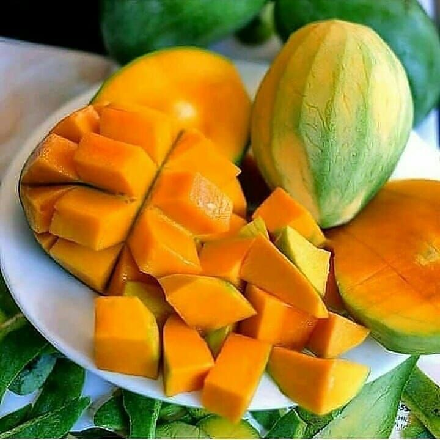
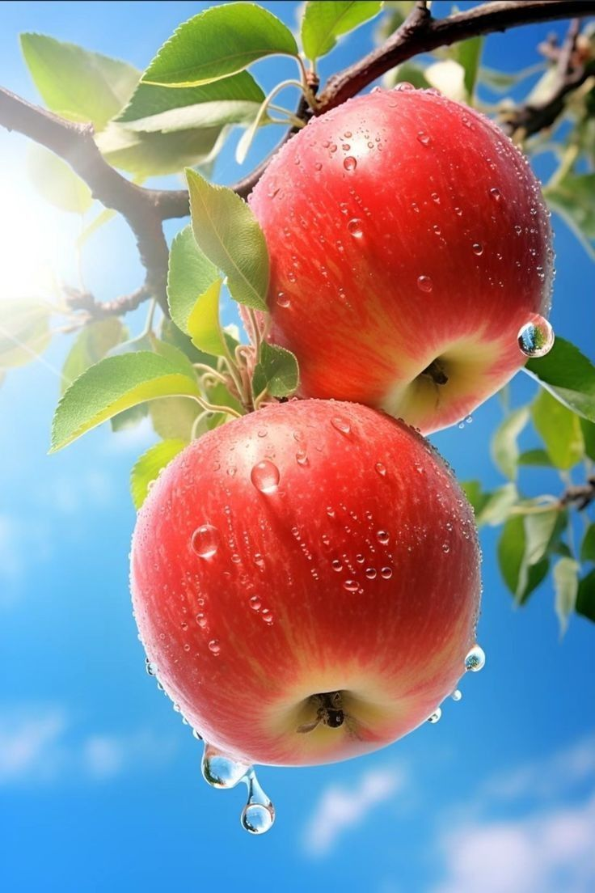
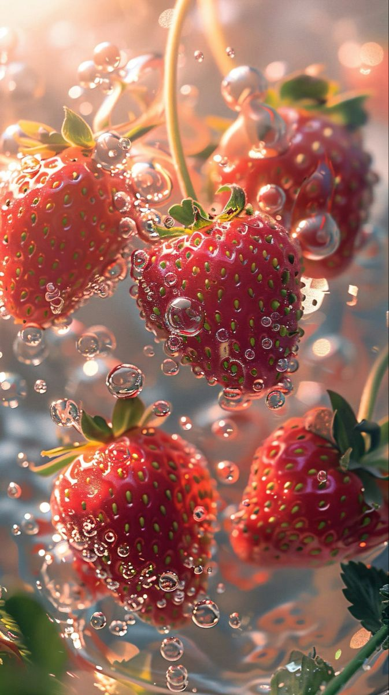
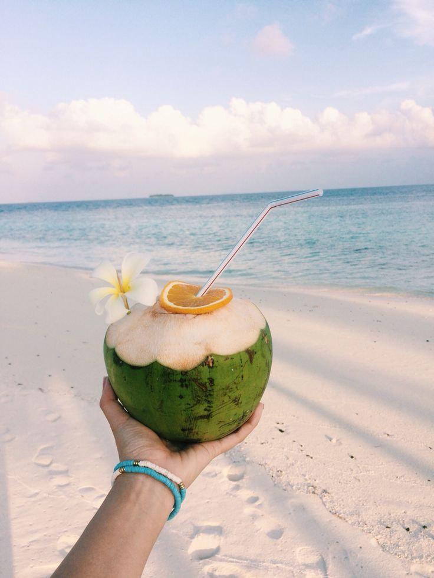

1.Buah Mangga

Nama "mangga" berasal dari bahasa Tamil, mankay, yang berarti man "pohon mangga" + kay "buah". Kata ini dibawa ke Eropa oleh orang-orang Portugis dan diserap menjadi manga (bahasa Portugis), mango (bahasa Spanyol dan Inggris) dan lainnya.
Mangga berasal dari daerah di sekitar perbatasan India dengan Burma, dan telah menyebar ke Asia Tenggara sekitar 1500 tahun yang silam. Buah ini dikenal dalam berbagai bahasa daerah, seperti pêlêm atau poh (Jw.), poh (Bl.), paok (Sas.), oyile (Gor.), dan mamplam (Ac.).
2.Buah Apel

Apel adalah buah yang populer dan dapat dengan mudah ditemukan di pasar tradisional ataupun di pasar swalayan. Apel memiliki rasa yang lezat dan menyegarkan sehingga banyak digemari oleh anak-anak. Tidak hanya itu, ternyata apel juga memberikan sejumlah manfaat kesehatan yang penting bagi tubuh anak-anak.
3.Buah Stroberi

Sebelum menyebar ke banyak negara, stroberi pertama kali diproduksi di Eropa sekitar abad ke-13. Dilansir dari The University of Vermont, saat itu Perancis mulai mencangkok varietas stroberi kayu (fragraria vesca) dari hutan belantara ke kebun. Varietas ini diketahui merupakan jenis stroberi asli pertama di dunia.
Setelah 200 tahun berlalu, tepatnya pada 1500-an, Eropa mulai membudidayakan varietas stroberi lain, yakni stroberi musky (fragraria moschata) di banyak kebun di Eropa. Penyebaran stroberi terus berlanjut. Pada 1600-an, Amerika Utara menyebarkan jenis baru berupa stroberi virginia (fragaria virginiana) ke Eropa. Inggris kemudian ikut menyusul penyebaran buah beri berbentuk hati ini pada akhir 1700-an hingga awal 1800-an. Selama periode ini, stroberi sangat populer di Inggris.
Hal itu bisa dilihat dari banyaknya varietas stroberi terbaru yang bermunculan. Tukang kebun di Inggris disebut berhasil menanam varietas baru stroberi yang mulanya hanya terdiri dari tiga varietas, hingga bertambah menjadi hampir 30 varietas stroberi. Di tempat berbeda, seorang mata-mata dari Perancis diketahui membawa varietas stroberi chili (fragaria chiloensis) dari Chili ke Perancis pada 1714.
4.Buah Kelapa

Tanggal 2 September adalah memperingati hari "Kelapa Sedunia". Buah kelapa telah menjadi bagian tak terpisahkan dari kehidupan manusia sejak ribuan tahun yang lalu. Dikenal sebagai "pohon kehidupan," kelapa telah memainkan peran penting dalam berbagai budaya di seluruh dunia, terutama di daerah tropis
4.Buah Jeruk
Rata-rata berat jeruk adalah 5 ons (140gr). Buah jeruk dilindungi secara eksternal oleh lapisan kulit yang tebal, yang membuatnya cukup tahan untuk diangkut. Konsentrasi air dalam buah, dalam kebanyakan varietas komersial, bervariasi dari 70% hingga 92%, yang tentu saja tergantung pada kelembaban yang ada dan kondisi pohon. Pohon jeruk dan lemon adalah contoh sempurna dari kasus di mana daun tanaman mengambil air dari buah, ketika kebutuhan air untuk dedaunan tidak dapat dipenuhi melalui sistem akar. Selama bulan-bulan musim panas dan di bawah kondisi rata-rata California Selatan, daun lemon mulai mengambil air dari buah-buahan sekitar pukul 6-7 pagi dan terus melakukannya sampai jam 5-6 sore.